Автономная AI-агентная платформа
Nous Research · v0.16.0 · Июль 2026
Open-source (MIT) · Dual-arch (ARM64 + x86_64)
Современная разработка требует
координации десятков AI-агентов
❌ Каждый агент — изолированный чат
❌ Нет общей памяти
❌ Ручная передача контекста
❌ Повторение ошибок
✅ 33 агента в одной среде
✅ Общая память + Neo4j
✅ Автоматическая оркестрация
✅ Накопление навыков (skills)
Самодостаточный AI-агентный дистрибутив
Один USB-накопитель → любая Linux-машина → рабочий AI-агент

Docker-контейнеры (gateway + dashboard) · Авто-определение ARM64/x64
1. Пользователь → GUI (Electron) или CLI (curl)
2. Запрос → Dashboard (:9123) → Gateway (:18649)
3. Gateway строит system prompt (память + навыки + инструменты)
4. LLM-модель генерирует ответ / tool calls
5. Инструменты исполняются (терминал, файлы, веб, браузер)
6. Хуки проверяют результат
7. Наблюдатели анализируют качество
8. Успешные паттерны → навыки (skills)
| Агент | Описание |
|---|---|
| plan1 | GLM-4.7 оркестратор + DeepSeek-исполнители |
| plan2 | 5 исследователей параллельно, Pre-Flight Gate |
| plan3 | 3 модели: Qwen3.6 + Nex + AgentWorld |
| plan4 | DiffusionGemma 26B — одна модель для всего |
| aflow-orch | MCTS-поиск оптимального workflow |
| observer-orch | Координирует 4 наблюдателя |
| Агент | Функция |
|---|---|
| requirements-agent | Сбор требований (BACCM, SMART) |
| system-analyst | Системный анализ (5 Whys, goal tree) |
| researcher | Глубокий поиск, создание sub-агентов |
| deep-plan-researcher | 3-фазный пайплайн с гейтами |
| architect-agent | Проектирование архитектуры |
| techlead-agent | StandardWork, ownership, dependency audit |
dev-creative — нестандартные решения
dev-pragmatic — промышленный стиль
dev-skeptic — KISS extreme
dev-maverick — ломает правила
developer-agent — упёртый
auditor — качество процесса
critic — поиск over-engineering
idea-generator — новые идеи
knowledge-curator — Neo4j-граф знаний
jidoka-evaluator — авто-остановка дефектов
14 гейтов на 10 фаз — deny-by-default (OPA-модель)
| Фаза | Гейт | Авто |
|---|---|---|
| 0 Bootstrap | FS, AGENTS.md, venv, Python | ✅ |
| 1 Requirements | BACCM, NFR, acceptance criteria | — |
| 3 Research | Searchbox, Neo4j health | ⚡ |
| 5.5 Pre-Flight | Контракты, порты, env vars | ✅ |
| 7 Security | SAST: bandit, gitleaks, semgrep | ✅ |
| 8 Deployment | Target, permissions, Docker | — |
| 8.5 Acceptance | Tests, traceability matrix | — |
| 10 Iterate | Observer-отчёты, AFlow | — |
✅ авто · ⚡ частично · — шаблон
132 SKILL.md — агент учится и запоминает
🧠 autonomous-ai-agents (8)
🔧 software-development (22)
📊 data-science (2)
🎨 creative (10)
🔬 research (6)
🔒 security (3)
🚀 deployment (5)
📝 writing (1)
hermes-distribution-packaging
Упаковка и санитизация дистрибутивов
systematic-debugging
4-фазный root-cause анализ
architecture-design
Совместное проектирование
test-driven-development
RED-GREEN-REFACTOR цикл
| Категория | Статус |
|---|---|
| API-ключи (sk-*) | ✅ 0 |
| IP-адреса | ✅ 0 |
| Домашние пути (/home/pavel/) | ✅ 0 |
| Идентификаторы устройств | ✅ 0 |
| Базы данных (state.db) | ✅ исключены |
| Файлы памяти (memories/) | ✅ исключены |
| Observer-состояние | ✅ исключены |
1,299 файлов скопировано · 328 санитизировано · 0 персональных данных
# 1. Клонировать
git clone git@github.com:Ichigec/her2code.git && cd her2code
# 2. Скачать бинарные файлы (из Releases)
# → https://github.com/Ichigec/her2code/releases/tag/v4.0.0
# 3. Загрузить Docker-образ
docker load -i hermes-agent-arm64.tar.gz # или x64
# 4. Распаковать GUI
tar xzf gui-arm64.tar.gz # или x64
# 5. Настроить LLM-ключ
cp .env.example .env && nano .env
# 6. Запустить!
./start-backend.sh && ./launch.shТребования: Linux (ARM64/x64) · Docker 20.10+ · curl · python3 · 5 GB
Полный цикл: требования → архитектура → код → тесты → деплой
5 стилей разработки (creative…maverick)
Quality gates на каждом этапе
3-фазный пайплайн с верификацией
Claw-граф для связывания знаний
Neo4j для персистентности
SAST-проверки (bandit, gitleaks, semgrep)
Авто-деплой с health-check
4 наблюдателя за качеством
132 навыка — накопленный опыт
AGENTS.md — конвенции проекта
DESCRIPTION.md — документация
📦 GitHub: github.com/Ichigec/her2code
📥 Release: github.com/Ichigec/her2code/releases/tag/v4.0.0
📖 Документация: DESCRIPTION.md (284 строки)
🏗️ Архитектура: ARCHITECTURE.svg
Hermes Agent v0.16.0 · Nous Research · MIT License
Сборка дистрибутива: 2026-07-19